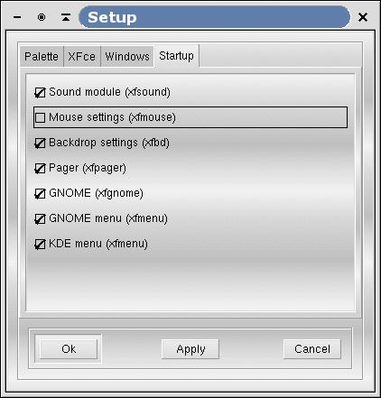

Figure 3-4. Startup tabfolder
Using the options from this screen you can adjust which XFce core modules (daemons/services) you want to start when XFce starts. For example, if you don't want the pager to be launched on startup, just unselect the option. Beware that if a module is not started, the corresponding feature won't be enabled : If you don't start xfsound, you won't get any sound in XFce.
Available options are:
Sound Module : starts xfsound module.
Mouse settings : starts xfmouse module.
Backdrop settings : starts xfbd to manage the background.
Pager : starts xfpager module.
GNOME : starts xfgnome module to provide GNOME compatibility.
GNOME menu : starts xfmenu to generate gnome menu in root menu xfwm.
KDE menu : starts xfmenu to generate kde menu.